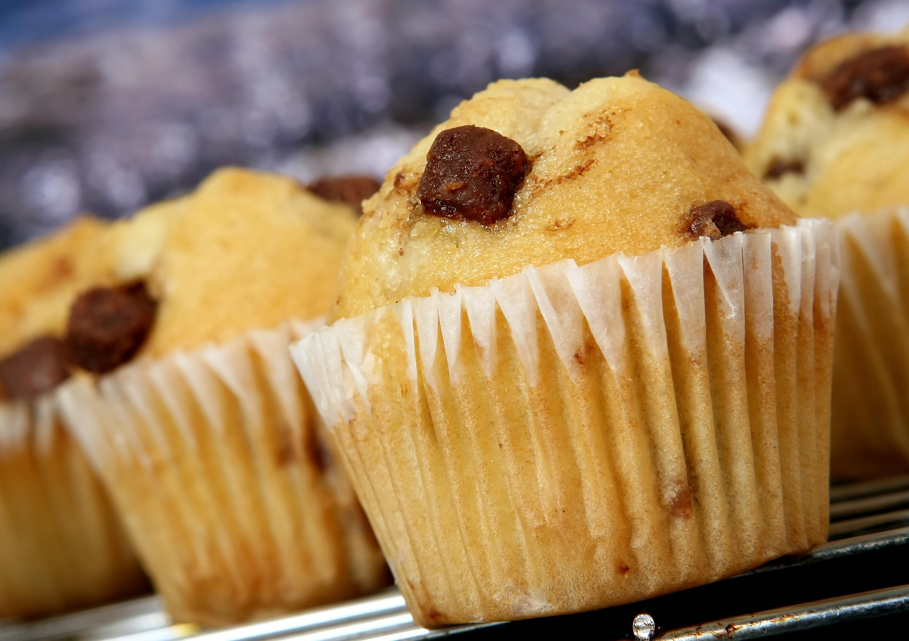

Cupcake

El clásico infaltable que nunca falla: esponjosos ponquecitos de vainilla
con una miga suave, repletos de trocitos de chocolate que se derriten en
cada bocado. Perfectos para meriendas, cumpleaños o simplemente para darse
un gusto casero y delicioso.
Ingredientes
- 180g Harina de trigo todo uso
- 1 y 1/2 cucharaditas de polvo para hornear
- 115g de mantequilla a temperatura ambiente
- 150g de azucar blanca
- 2 huevos
- 120ml de leche entera
- 1 y 1/2 cucharaditas de esencia de vainilla
- 130g de chispas de chocolate
- 1 pizca de sal
Preparacion
-
En un tazon, tamiza la harina junto con el polvo para hornear y la sal.
Reserva
-
Bate la mantequilla con el azucar a velocidad media durante 3 o 4
minutos hasta obtener una mezcla palida y cremosa
-
Agrega los huevo uno a uno, batiendo bien tras cada adicion. Incorpora
la esencia de vainilla
-
Aniade los ingredientes secos en tres partes, alternandolos con la
leche, mezclando solo hasta integrar (no batir en exceso para que queden
suaves)
-
Mezcla las chispas de chocolate con la cucharada de harina extra (eso
evita que se vayan al fondo) e incorporalas a la masa con una espatula
mediante movimientos envolventes
-
Reparte la mezcla en capacillos para cupcake llenando hasta 3/4 de su
capacidad. Honrea a 180°C durante 18-20 minutos o hasta que al insertar
un palillo, este salga limpio. Deja enfriar sobre una rejilla
Postres